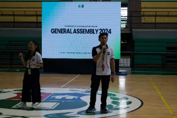
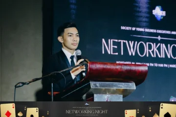
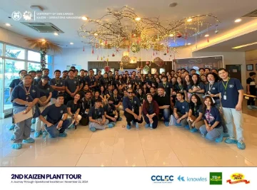
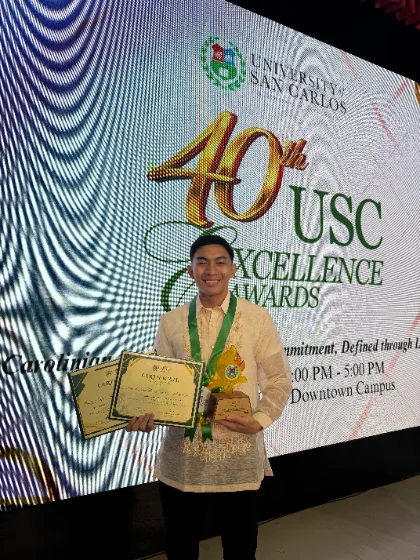
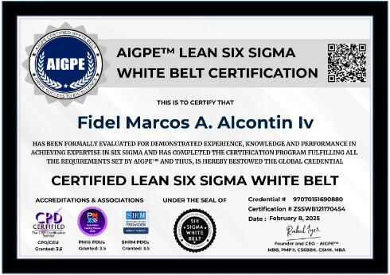
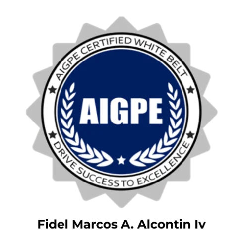

Executive Assistant — Meeting Coordination, Stakeholder Management & Project Operations
I keep founders' calendars, follow-ups, and coordination running on systems, not memory. Led SYBEE (Society of Young Business Executives and Entrepreneurs), a 1,100+ member student organization, to an Outstanding Organization award from the Office of Student Formation and Activities. Largest single event: 1,110 attendees, 10+ external speakers.
As Executive Secretary, I filtered what got escalated to the president. As President, I was the person that filtering protected. You get someone who's made that judgment call from both seats, not someone guessing at what "important enough to interrupt you" means.
Commitments from meetings get tracked to closure, not just recorded. I write an SOP for anything that repeats. The one I wrote for my successors was still onboarding people after I left. Your process survives me, whether I'm on holiday or gone entirely.
Every program I've run has had something go wrong — loud music, a last-minute venue change, an unconfirmed headcount. I fix it, then I document it so it doesn't happen twice. Check the case studies below: I kept the failures in, not just the wins.
Calendar management and scheduling across timezones. Inbox triage that protects focus time rather than just clearing notifications. Drafting replies in your voice.
Meeting coordination, agendas, minutes, and action items. Commitment tracking until things actually close. Context briefs before calls, recaps after.
Point of contact between you, your team, clients, and vendors. Managing multiple moving parts and chasing what needs chasing.
Planning through execution: proposals, timelines, budget tracking, logistics, post-event reporting.
SOPs, process documentation, trackers, and internal records that make the work repeatable.
Budget development and tracking against actuals. Liquidation reporting that reconciles every expense against its funding source, plus receipt-level documentation to back it up. Four for four approved on first submission, no resubmissions.
Four programs for SYBEE (Society of Young Business Executives and Entrepreneurs), ordered by scale.
My role: Led planning, coordination, and execution of the annual General Assembly.
Financial documentation: Developed and tracked the event budget. Liquidation report approved on first submission.
What it required: Coordinating 10+ speakers across university departments, managing registration and resource distribution for 1,110 participants, holding the full schedule to a fixed half-day window.
What went wrong and what I did: On-site needs came up around participant experience and technical setup during the session. I addressed them as they arose while holding the schedule, and the event finished ahead of the planned end time.

SYBEE's General Assembly orients incoming and continuing Business Administration students to university facilities, faculty, and student organizations each academic year. As Project Lead, I co-developed the proposal defining rationale, objectives, schedule, and budget, then built the detailed event timeline covering registration, welcoming remarks, and multiple orientation sessions from Learning Materials to Health Services. The coordination load was the real challenge: identifying, securing, and confirming 10+ speakers and presenters from different university departments, each with their own availability, while keeping a half-day schedule from 7:30 AM to 12:30 PM on track for 1,110 students, including graduating students who needed specific academic-system guidance. I managed communication between project leads, officers, volunteers, and university departments throughout, secured the necessary endorsements from the department chair and adviser, and oversaw registration and on-site sign-in for all participants. On-site issues around participant experience and technical setup came up during the day. I handled them as they surfaced without losing the schedule, and the event closed earlier than planned.
My role: Project Co-Lead. Planning, vendor coordination, budget development and tracking, on-site execution.
Financial documentation: Managed fund allocation across venue, decor, entertainment, and awards categories. Liquidation report approved on first submission.
What it required: Coordinating a premium external venue, multiple vendors, internal committees, and a formal buffet service for 381 people, against a compressed timeline.
What went wrong and what I did: Food variety drew on-site feedback, so I liaised with catering during the event. Music was too loud during networking periods, which I addressed live and then documented as an audio guideline recommendation for future events.

SYBEE's Year-End Networking Night brought together 381 Business Administration students and faculty for a formal evening event at Marco Polo Plaza Cebu, themed "Casino Royale." As Project Co-Lead, I co-developed the proposal and budget, then built the event schedule covering registration, opening remarks, dinner service, entertainment, structured networking time, and awards. Coordination ran across a premium external venue and multiple vendors, including entertainment, AV, decor, photo booth, and DJ, on a compressed timeline. I served as the primary liaison with Marco Polo Plaza Cebu, internal SYBEE committees, and external providers, and oversaw fund allocation across venue, decor, entertainment, and awards. Two issues surfaced during execution. Food variety across the buffet service drew feedback from attendees, so I liaised directly with hotel catering staff to address it. Music volume during networking periods interfered with conversation, which I addressed in the moment and then documented as a recommendation for clearer audio-level guidelines at future events. The event closed with a 5/5 rating from project lead evaluation.
My role: Co-led planning, coordination, and execution across three external facilities.
Financial documentation: Tracked transportation and participant material costs against budget. Liquidation report approved on first submission.
What it required: Securing tour slots and managing distinct protocols across three plants, absorbing last-minute schedule changes without disrupting the day.
What went wrong and what I did: A host plant requested a last-minute itinerary change. I coordinated internally and communicated the update to participants quickly enough that it didn't disrupt the day.

The Kaizen Plant Tour gives SYBEE's Operations Management students direct exposure to manufacturing environments, bridging classroom theory with industry practice. As Project Co-Lead, I co-developed the proposal and managed the full-day itinerary across three external facilities, Profoods, Magic Melt, and Knowles, for 90 students and faculty on a single date. Each plant operated under its own schedule and protocols, which meant securing tour slots individually and staying adaptable to changes initiated by the host sites. I served as the key liaison with plant representatives, university faculty, and student participants, and managed the budget covering transportation and participant materials. A host plant requested a last-minute itinerary adjustment on the day. I coordinated internally and communicated the change to participants quickly enough to keep it from disrupting the schedule. The program was delivered in full, within budget, and received a 5/5 rating from project lead evaluation.
My role: Project Co-Lead. Resource mobilization and execution for a community outreach initiative.
Financial documentation: Managed procurement and fund allocation across supplies, transportation, and beneficiary materials. Liquidation report approved on first submission.
What it required: Coordinating three partner organizations and 89 volunteers with incomplete beneficiary-count data going in.
What went wrong and what I did: The exact number of youth beneficiaries wasn't confirmed ahead of time, which complicated donation planning. I managed distribution carefully on the day and documented the gap as a recommendation for better pre-event headcount data in future outreach.
Seeds of Hope was a community outreach initiative by SYBEE's USC KAIZEN, in partnership with the Psychology Department and the Office of Student Formation and Activities, delivering school supplies and support to youth in Miramar, Talisay City. As Project Co-Lead, I co-developed the proposal and managed a half-day program for 89 volunteers across the three partner organizations. I liaised between all three groups to secure endorsements and align on activities, and managed the budget covering supplies, transportation, and beneficiary giveaways. The main planning gap was the beneficiary count: the exact number of youth on-site wasn't confirmed ahead of the event, which complicated resource planning for the donation drive. I managed distribution carefully on the day to work within that uncertainty, then documented the gap afterward as a specific recommendation for improved pre-event data gathering in future outreach programs. The initiative received a 5/5 rating in post-activity evaluation.

August 2024 – May 2025
Owned the president's calendar and correspondence. Maintained minutes, attendance, and resolutions. Served as the central point of contact between the executive board, partners, and members. Drafted official letters, proposals, and reports. Built the project trackers the board ran on, and wrote the SOP for incoming cluster secretaries — still used to onboard people after my term ended.
May 2025 – May 2026
Led the organization to an Outstanding Organization recognition. Directed strategy and executive board decision-making, with oversight across multiple concurrent projects.
Outstanding Organization Award, Office of Student Formation and Activities, awarded under his term as President.
Two years of executive operations, from both sides of the desk. I know what an executive needs surfaced versus handled quietly, because I've done both jobs.


25 hours per week. Full days Monday, Wednesday, Friday. Mornings Tuesday and Thursday. Weekends available.
Based in Cebu, Philippines. My hours cover a full Australian business day and the opening of a US Eastern one.
$12/hour. Open to discussing terms for longer-term engagements.
On AI: I use AI tools to work faster and catch what manual processes miss. I'll always tell you what's automated and what I'm personally handling. You're hiring a person, and the systems come with me.
If your operation runs on constant coordination and you need someone to own it, I'd like to hear about it.
Book a 15-minute call